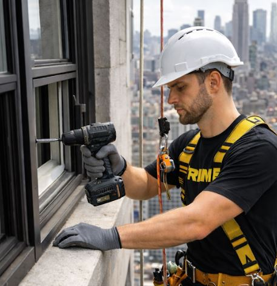

Certified facade inspections, window cleaning, and repairs for high-rise buildings in NYC. Full safety compliance, experienced teams, and seamless Local Law 11 support.
High-rise facade maintenance and inspection requires specialized expertise, equipment, and certifications that go far beyond standard window cleaning. Our high-rise division is fully equipped for NYC's demanding safety requirements — including Local Law 11 / FISP facade inspection compliance.
Our certified teams use professional rope access, scaffolding, and elevated equipment to safely reach every level of your building. We deliver thorough cleaning, accurate inspection documentation, and prompt repair services — keeping your building compliant and looking its best.

Everything you need for a professional, worry-free experience from start to finish.
Complete facade inspection and compliance documentation for NYC's Facade Inspection Safety Program.
Certified rope access technicians for safe, efficient work on any building height.
Professional exterior window cleaning for multi-story and skyscraper buildings.
Masonry, caulking, sealant, and cladding repairs identified during inspection or cleaning.
Detailed written and photographic reports meeting NYC DOB requirements.
All work follows OSHA, NYC DOB, and industry best-practice safety standards.
Simple, transparent, and professional every step of the way.
We discuss your building's specific needs, timeline, and compliance requirements.
Access methodology, safety plan, and scheduling coordinated with building management.
Certified team executes cleaning and/or facade inspection per approved plan.
Comprehensive report delivered — ready for NYC DOB submission if required.